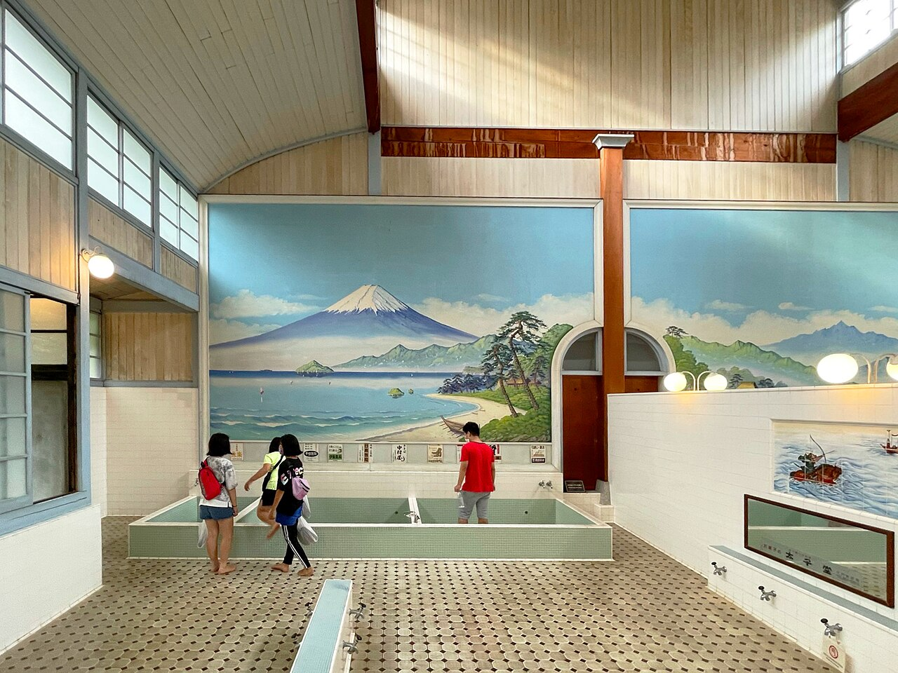
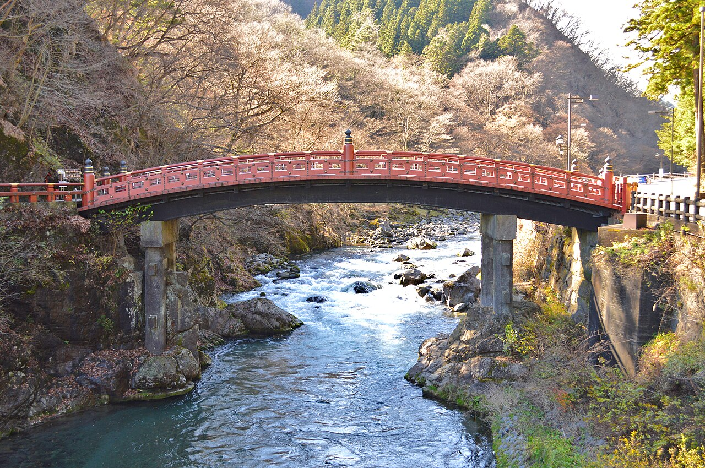
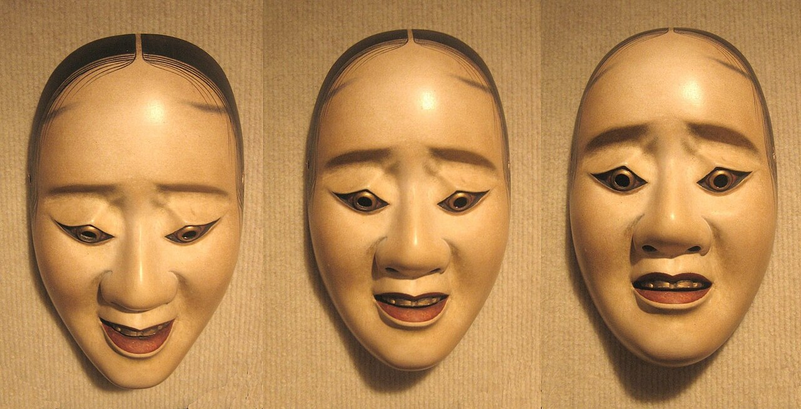
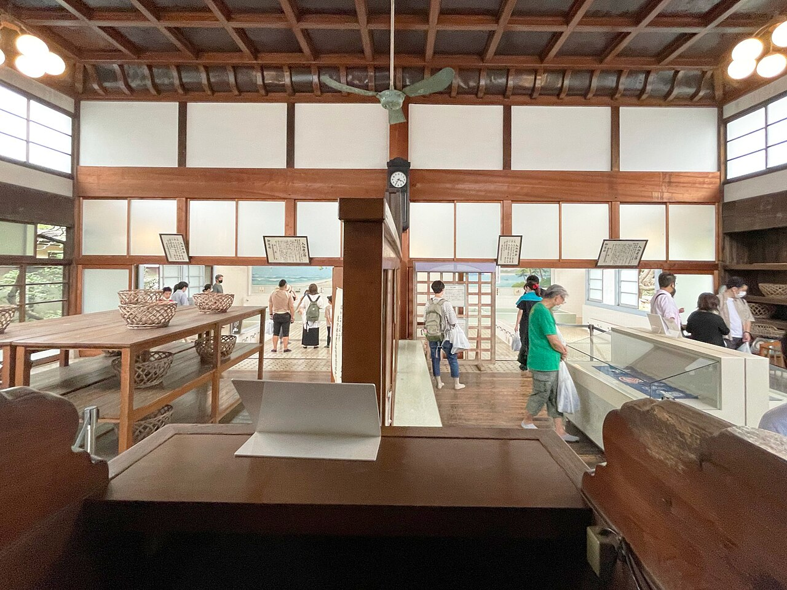
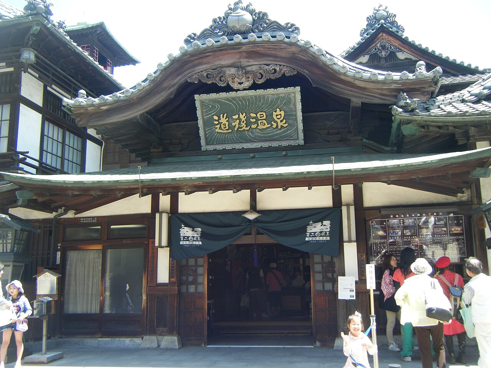

金曜日の夜、2024年1月5日。日本テレビの「金曜ロードショー」が『千と千尋の神隠し』を放送している最中に、番組の公式X（旧ツイッター）が宮崎駿監督の言葉を投稿しました。「カオナシなんて周りにいっぱいいますよ」。
映画の公開は2001年。黒い影のような体に白い面をつけ、ほとんど言葉を話さないカオナシは、20年以上にわたって観客にさまざまに読み解かれてきました。カオナシは、いったい何を表しているのでしょうか。

言葉を話さず、金を差し出し、相手をのみこむカオナシ。その正体を、宮崎駿監督と鈴木敏夫プロデューサーが語った言葉から、構想の図と年表でたどります。あの白い面の下にいるのは、いったいだれでしょう？
金曜日の夜、2024年1月5日。日本テレビの「金曜ロードショー」が『千と千尋の神隠し』を放送している最中に、番組の公式X（旧ツイッター）が宮崎駿監督の言葉を投稿しました。「カオナシなんて周りにいっぱいいますよ」。
映画の公開は2001年。黒い影のような体に白い面をつけ、ほとんど言葉を話さないカオナシは、20年以上にわたって観客にさまざまに読み解かれてきました。カオナシは、いったい何を表しているのでしょうか。
監督の言葉によれば、カオナシは「誰かとくっつきたいけど自分がない」人の姿です。番組（金曜ロードショー）の説明によれば、自分を持たないので、出会う相手や場所によって姿を変えていきます。特別な怪物ではなく、私たちのすぐそばにいる存在として描かれているのです。
意外なことに、カオナシは主役級の役として生まれたわけではありません。宮崎監督は、カオナシは「本当に単なる脇役だったんです」と振り返っています（『千尋と不思議の町』より。『スタジオジブリ物語』所収、東洋経済オンライン2023年7月14日）。
千尋が初めて湯屋（お風呂屋）へ渡る橋のたもとに、ただ立たせていただけの存在でした。ところが、絵が動く映像になってみると、妙に気になるヤツだった、と監督は言います。なぜあそこに立っているのかを考えるうちに、「使えるかもしれない」と思うようになったそうです。
転機は2000年5月ごろ、公開のおよそ1年前です。鈴木敏夫プロデューサーによると、それまでの構想は、湯婆婆（ゆばーば）を倒したあと、さらに姉の銭婆（ぜにーば）と戦うアクション映画でした。面白そうでも、3時間はかかる内容だったといいます。
鈴木さんは制作期間を1年のばす案を出しましたが、宮崎監督と作画監督の安藤雅司さんは反対しました。代わりに、考えていた展開を全部切り捨てると決めます。監督はそのときを振り返って、「突然カオナシというキャラクターが浮上したんです」と語っています（同じく『千尋と不思議の町』より）。

カオナシが湯屋に入るきっかけは、千尋の小さな親切です。外に立っていたカオナシをお客だと思った千尋は、戸を開けたままにしておきます。そこから湯屋に入りこんだカオナシは、千尋のあとを追うようになります。
夜の湯屋で、カオナシは手のひらから金（きん）を出してみせます。金に群がる従業員たちに料理を運ばせては食べ続け、体はみるみる大きくなっていきます。のみこんだ相手の声で話すようにもなります。ところが、千尋だけは金を受け取りません。断られたカオナシは暴れ出し、従業員たちまでのみこんでしまいます。
金曜ロードショーの投稿は、カオナシを「自分を持たず、出会うもの、人によって変化する」存在だと説明しています。中身がないからこそ、まわりの色に染まってしまう。金と食べ物への欲があふれる湯屋で、カオナシはその欲を映し取り、ふくれ上がっていったのです。
逆に物語の後半、静かな相手のそばにいるときは、カオナシもおとなしく過ごします。どんな姿になるかは、いつも、そばにいる相手しだいなのです。

橋の上では、ただ静かに立っていたカオナシ。それが、金と料理が行き交う湯屋に入ったとたん、欲をのみこんでふくれ上がりました。カオナシを変えたのは、相手だけではありません。欲があふれる湯屋という場所そのものが、カオナシを変えたのです。
その湯屋には、実在の湯がヒントになっています。スタジオジブリ公式サイトの日誌（2003年1月）によれば、江戸東京たてもの園の銭湯「子宝湯（こだからゆ）」が大きなインスピレーションを与えました。宮崎監督の答えは「特定のモデルはない」けれど、愛媛県の道後温泉は「確かに入っている」。扉の写真も子宝湯です。


では、カオナシにモデルはいたのでしょうか。鈴木プロデューサーは2010年7月、『借りぐらしのアリエッティ』の公開前の催しで、その監督を務めた米林宏昌さんがカオナシのモデルだと明かしました。歩く姿が似ている、と宮崎監督が言っていたとも伝えられています。
鈴木さん自身は、2016年の著書『ジブリの仲間たち』で、カオナシは「人間の心の底にある闇」、心理学でいう無意識を表していると読み解きました（『ジブリの仲間たち』より。『スタジオジブリ物語』所収、東洋経済オンライン2023年7月14日）。
そして2024年、冒頭の投稿です。監督は、誰かとくっつきたいのに自分がない人は「どこにでもいると思いますけどね」と語っていました（いつの取材の言葉かは示されていません）。
カオナシを孤独な若者や、お金で心を買おうとする社会の姿と受け取る見方もあります。ただ、作り手の言葉を整理すると答えはこうです。見た目のもとは米林さん。鈴木さんの読みでは、意味は人の心の中にあるもの。そして監督は、それを「どこにでもいる」と、私たちのまわりの話として答えたのです。
日本での興行収入（316.8億円）。2001年の公開から2020年の再上映までを合わせた額日本映画製作者連盟、Wikipedia 英語版（2020年時点）
日本の興行収入の歴代1位だった期間。2020年に『劇場版「鬼滅の刃」無限列車編』に抜かれたWikipedia 英語版 Spirited Away
「これなら2時間で収まる」と始めた新しい構想で、仕上がった映画の上映時間スタジオジブリ公式サイト
完成したフィルムを通して見たとき、宮崎監督は「これはカオナシの映画だ」と言い、鈴木さんは「当たり前じゃないですか」と返したそうです（『ロマンアルバム』より。『スタジオジブリ物語』所収、東洋経済オンライン2023年7月14日）。
鈴木さんは本予告（本格的な予告編）を千尋とカオナシの場面で作り、宣伝の関係者に1か月ほど反対されても押し切りました。新聞広告も、千尋とブタの絵柄から、千尋とカオナシが向かい合う絵柄に急きょ変更。公開1週間前、2001年7月13日の読売新聞のカラー全面広告にも、この絵が使われました。
一方、ハクと千尋の場面は「恋愛映画ではないから」という方針で、予告にも広告にも使われませんでした。ハクが広告に出たのは、公開から5か月後の12月です。
宣伝の主役も、千尋の相手役も、ハクではなくカオナシだったのです。
次に『千と千尋の神隠し』を見るときは、千尋が初めて橋を渡る場面で、隅に立つカオナシを探してみてください。そして、自分の中にもカオナシがいないか、少しだけ考えてみてください。